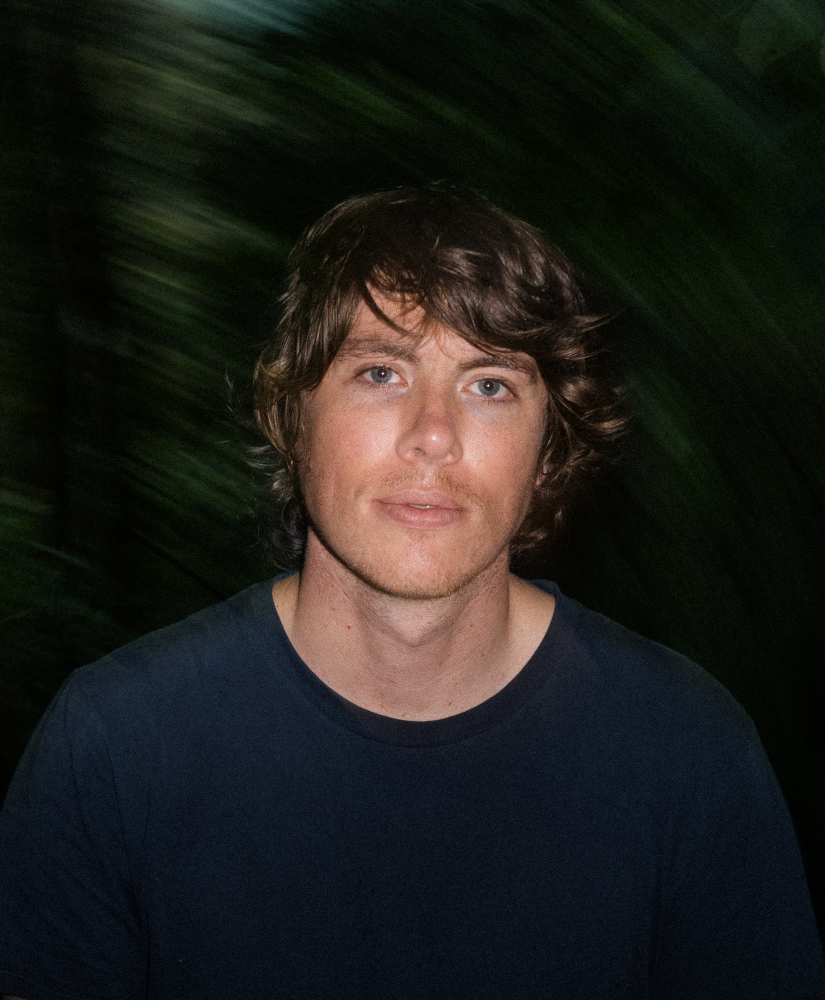

Carlo Nasisse is a director and cinematographer whose work explores ecology and the relationships between humans, landscapes, and politics. His films have been supported and exhibited by The New Yorker, POV Shorts, PBS, Vimeo Staff Picks, the Times Art Center in Berlin, and the Rockbund Museum of Art in Shanghai, and have screened at major festivals including SXSW, True/False, Camden International, Oberhausen, SFFILM, and Slamdance. He has received grants from the Austin Film Society, Jigsaw Productions, the Wenner-Gren Foundation, and FOCINE. Carlo holds an MFA in Documentary Film and Video from Stanford University.